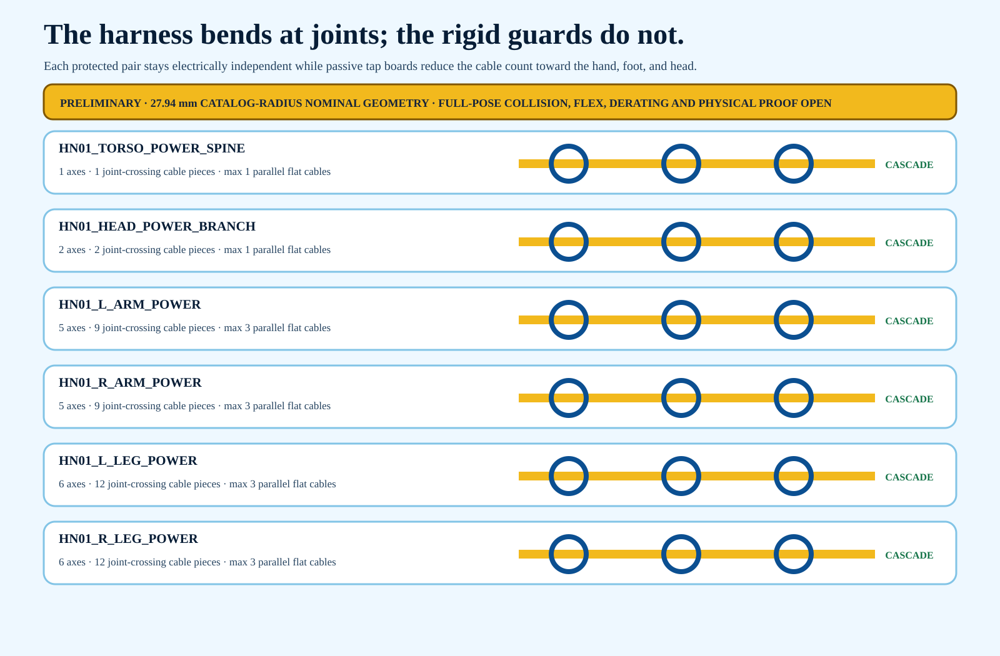

25
direct individually protected actuator branches
HR-30 whole-body P0.1
The tap-board cascade is rejected. Each actuator retains one unspliced two-conductor moving branch from its protected output to one fixed-side transition. Distal cables cross every upstream joint, producing 76 explicit crossing segments. Rigid guards stop before every axis.
direct individually protected actuator branches
explicit upstream joint-crossing segments
existing fixed Micro-Fit transition candidates
rigid-link and flexible-joint guard solids
full-pose or physical validations completed
Editable harness STEP · Harness-only GLB · 76 crossing records

Each igus CF130.03.02.UL candidate is one two-conductor VDD/return pair. It has no intermediate electrical splice between its protection channel and fixed-side transition. A cable feeding a distal ankle, hand or head axis crosses each upstream joint and is represented at every one of those joints. The manufacturer 5.0 mm maximum OD and 7.5xd radius input produce a 37.5 mm nominal CAD bend; actual bend plus torsion, collision, pinch, thermal and life proof remain open.
The construction candidate remains consistent with the physical harness, protected branch PDU and cable-kit packages.
The 25-board/45-piece Cicoil concept added intermediate terminations and contradicted the controlled direct-branch architecture. It receives no procurement or design credit.
No rigid guard may span a shoulder, elbow, wrist, hip, knee, ankle, neck or waist axis.
| Corridor | Direct branches | Joint crossings | Maximum parallel pairs |
|---|---|---|---|
| HN01_TORSO_POWER_SPINE | 1 | 1 | 1 |
| HN01_HEAD_POWER_BRANCH | 2 | 3 | 2 |
| HN01_L_ARM_POWER | 5 | 15 | 5 |
| HN01_R_ARM_POWER | 5 | 15 | 5 |
| HN01_L_LEG_POWER | 6 | 21 | 6 |
| HN01_R_LEG_POWER | 6 | 21 | 6 |
tap-board/Cicoil cascade predecessor
REJECTED; preserve only in history and do not procure, draw or install intermediate boards
complete path and cut length
route each of 25 direct branches from its protection output across every registered upstream joint to the fixed transition; measure on a full-scale dressed body
CF130-to-Micro-Fit termination
igus core-OD drawing or written disposition, received-lot measurement, exact tool/process, crimp cross-section and pull tests
full-range bend and torsion applicability
manufacturer application review plus exact 25-axis motion spectrum and service-life calculation/cycling
fixed transition physical proof
received 43025/43020 fit, bracket/fastener/clamp proof, pigtail length, retention and no-load-at-contact test
full-range joint kinematics
sweep all 76 direct-branch crossings through exact min/max poses and fall-restraint envelope
whole-body collision and pinch clearance
exact body/guard/cable collision sweeps in neutral, crouch, weight transfer, step and restrained-fall configurations
ampacity and voltage drop
received conductor DCR, ambient/bundle/connector derating, duty-cycle currents, fault current and temperature-rise tests
rigid guard and flexible dress-pack design
material, wall/corrugation, attachment, removability, impact, snag, chafe, flame and human-contact validation
mass and COM update
supplier mass plus as-built cable/connector/guard mass reconciled into whole-body budget
EMC and power/data separation
final routed data harness plus shield/reference-bond plan and emissions/immunity tests
prototype proof
unpowered full-scale dress build, continuity/insulation/polarity checks, then separately authorized current-limited motion cycling
qualified release review
signed mechanical/electrical/functional-safety review after preceding evidence exists
Cable candidate · 25 branches · 76 crossings · 25 transitions · Guards · Sources · Holds · Status
No artifact authorizes procurement, fabrication, connection, powered testing, motion or energization.